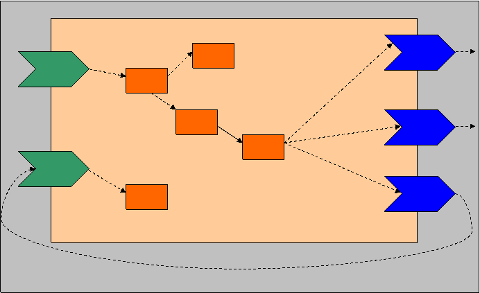

Files Prepare Run Troubleshooting Related Topics
SCA (Service Component Architecture) is an evolving paradigm of multi-implementation application assembly that allows the implementation of a component and its communication to be clearly separated. WebLogic SCA is a lightweight Spring 2.5 (or higher) SCA container for standalone WebLogic Server. The core engine of the WebLogic SCA container is exposed as a library for Oracle SOA Suite's consumption. SCA has evolving specifications for both plain Java (see [SCA-J]) and Spring artifacts. WebLogic SCA aligns itself with the Spring C&I specification 1.1 ([SCA-S]) except for SCA Properties.
This example demonstrates the most important features of WebLogic SCA container with an application that mimics a real-world scenario. The demonstrated features include:
The example is based on a shopping cart application. During the View Cart action the following fields will be derived: total quantity and total price. These will be displayed on the View Cart page and the example will verify the values of these fields against the expected values.
The total quantity will be calculated using a Web service (say getTotalQuantity) exposed by a JSCA application. The JSCA application will also have three reference bindings and a network of spring beans (POJOs). One reference will be of type EJB 2.0; the second will be of type Web service; and the last reference will be a local reference. All three references will calculate the total quantity individually. The getTotalQuantity will invoke all of them individually (through POJO bean mesh) to ensure that they all return the same value.
The total price will be calculated using an EJB 3.0 service (say getTotalPrice) exposed by a JSCA application. The JSCA application will also have three reference bindings and a network of spring beans (POJOs). One reference will be of type EJB 3.0; the second will be of type WS; and the last reference will be a local reference. All three references will calculate the total quantity individually. The getTotalPrice will invoke all of them individually (through POJO bean mesh) to ensure that they all return the same value.
Figure 1 below captures the architecture of the application.

Legend:
GREEN => EAR
YELLOW => WAR
BLUE => EJB JAR
BROWN => Web service WAR
I => EAR which hosts the client application (Shopping Cart)
II => Client application (WAR)
III => EAR that hosts the JSCA application that exposes the getTotalQuantity service
IV => The JSCA application (WAR)
V => EAR that hosts the JSCA application that exposes the getTotalPrice service
VI => The JSCA application (WAR)
VII => EAR that hosts the referred EJB(s) and Web service(s)
VIII => EJB JAR that hosts the referred EJBs
IX => WS WAR that hosts the referred Web services

FIGURE 2
Legend:
GREEN => Services
BLUE => References
ORANGE => POJO Beans
The first reference will expose the getTotalQuantity functionality. You will also notice that one of the references is satisfied by a local service (local binding would take place in this case).
Directory Location:
D:\WORKSPACE\INSTALLATIONS\ORACLE_HOME_14\wlserver/samples/server/examples/src/examples/sca/shoppingcart/
Before working with this example:
No special configuration is required for this example.
To build the example, follow these steps:
D:\WORKSPACE\INSTALLATIONS\ORACLE_HOME_14\wlserver/samples/server/examples/src/examples/sca/shoppingcart directory. ant buildant deploy wl_server WebLogic Server Examples domain.To run the example, follow these steps:
D:\WORKSPACE\INSTALLATIONS\ORACLE_HOME_14\wlserver/samples/server\examples\src\examples\sca\shoppingcart):
prompt> ant run
build.xml run target, which opens your default browser to the following URL:http://localhost:port/ShoppingCartCtx/ShoppingCartCopyright © 1996, 2020, Oracle and/or its affiliates. All rights reserved.